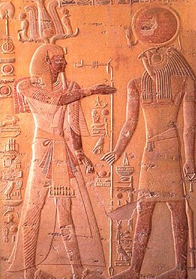
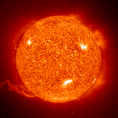

Here is a brief history of the sun and how it affects the earth.
The history of the sun on earth
Throughout the years of our planet, there have been several distinct ideas about the nature and origin of the sun. Usually the sun is portrayed in a masculine personification, since females have seemed to own the moon and its 30 day lunar cycle. Of course there's the Egyptian Sun god Ra, who was said to ride the moon across the sky with the sun upon his head in two boats, one boat for the rising moon, and one boat for the sunset. The famous Greek/Roman sun god Apollo, no relation to Rocky's Apollo Creed is probably the most well know of the sun gods. He was the god of sun, light, clarity, truth. The Romans had a belief similar to that of the Egyptians; the Romans believed that Apollo rode a fiery chariot across the sky pulled by several wild horses. What's interesting between the Egyptians and Romans is that Apollo isn't considered the head god in the roman religious hierarchy. Apollo was actually the sun of Zeus, so no wonder he was liked to on occasion strike people down with arrows of death.
One the most interesting sun gods is the Aztec sun god, incidentally the current sun is the final sun in a series of five. The first four died of various causes and accordingly calamities on the earth. For instance the 4th sun god was torment by the god of darkness, calling her selfish and vain. In fact she got so upset that she started to cry, and of course being an ex god of water proceeded to flood the world. The other god decided to fix the problem by installing a god on a permanent basis; however this would require self-sacrifice by jumping into flames. The god who ended up being the sun was originally slated to be the moon, but due to her shameless self sacrifice she was reward with the position of the sun.
The sun’s history
5 billion years ago, a small cloud of gas and dust began to compress under its own weight, or if your a creationist 5000 years ago. As more and more gas began to be crushed on the weight of gravity, hydrogen within the core began to fuse together. This fusion processes, one still sought by earth's scientist makes hydrogen into helium, and release’s incredible amounts of energy. This energy is converted into tremendous amounts of heat and light, which forms the energy source for our planet. Imagine the power you could amass if you were able to corner the market on the amount of sunlight hitting the earth. The cloud from which the sun is formed, fortunately for us, did not use all of its gas and dust to make the Sun; that which was left over, less than one percent of the original material, formed the 9 planets. Incidentally Jupiter could be considered a failed sun, that didn't have sufficient mass to start the fusion process.
Luckily for us in the real estate business the sun has 3 to 4 billion years more of prime building time. As the sun begins to age more and more of its interior will be converted into helium. Once the sun exhausts its source of fuel, it will begin fusing helium into heavier elements. The heaver element carbon, the primary new fusion product, gives off a lot more energy than the similar production of helium. This excess energy will make your property on the sun even more valuable, since the excess energy could be harvest for your use. In fact as the sun pumps out more energy it cause the outer layer of the sun to expand and will engulf the inner core planets up to Mars. This lost of prime real estate will make your investment in the sun even more valuable, since the available area for building will be reduced. Not to mention but the sun's color will change to a pleasing Red color, a nice change of pace from the current yellow/orange hue our sun currently has. .